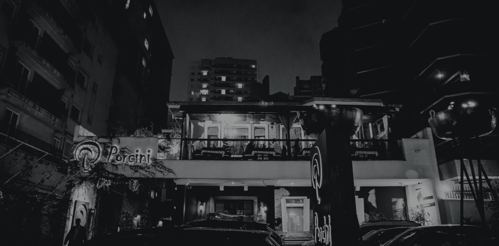

Almoço em família
Uma ocasião para compartilhar o menu italiano.
Almoço em família, evento empresarial ou jantar romântico.

À mesa
Estar à mesa é um dos momentos mais importantes e prazerosos da vida. Por isso fomos “chamados para servir” — em cada ocasião abaixo.
Uma ocasião para compartilhar o menu italiano.
Uma mesa para encontros de trabalho.
Uma escolha para celebrar a dois.
Menu italiano
O menu reúne entradas, polentas, bruschette, massas artesanais, carnes, massas com molhos e sobremesas.
Explorar o menu oficial

Adega
Uma adega no subsolo, com teto de vidro visível no hall de entrada.
Conhecer o Porcini
Visita e reservas
Reservas somente por telefone.
+55 (41) 3023-5117+55 (41) 3022-5115Rua Buenos Aires 277Aceitamos dinheiro e os principais cartões de débito e crédito.